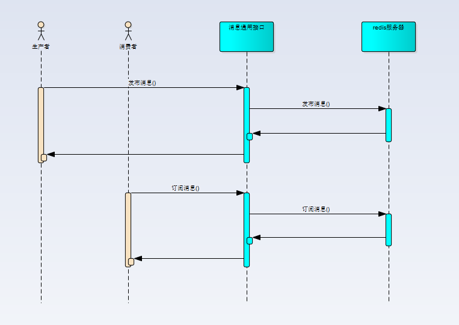

<!DOCTYPE html>
<html>
<head><meta name="generator" content="Hexo 3.8.0">
  <meta charset="utf-8">
  

  
  <title>mq_v2.md | Hexo</title>
  <meta name="viewport" content="width=device-width, initial-scale=1, maximum-scale=1">
  <meta name="description" content="wiki上的定义，消息队列（Message queue，下面简称MQ）是一种进程间通信或同一进程的不同线程间的通信方式。 背景介绍消息队列1.0小雨伞原有消息队列底层是使用redis的list数据结构来实现的，通过rpush与lpop操作实现消息的入栈与出栈。消息队列1.0优点：  实现简单 调用方便但是随着业务的增长，消息队列1.0在功能和管理上越来越难以满足我们的业务需求。  业务痛点原有消息">
<meta property="og:type" content="article">
<meta property="og:title" content="mq_v2.md">
<meta property="og:url" content="http://yoursite.com/2019/01/23/mq-v2-md/index.html">
<meta property="og:site_name" content="Hexo">
<meta property="og:description" content="wiki上的定义，消息队列（Message queue，下面简称MQ）是一种进程间通信或同一进程的不同线程间的通信方式。 背景介绍消息队列1.0小雨伞原有消息队列底层是使用redis的list数据结构来实现的，通过rpush与lpop操作实现消息的入栈与出栈。消息队列1.0优点：  实现简单 调用方便但是随着业务的增长，消息队列1.0在功能和管理上越来越难以满足我们的业务需求。  业务痛点原有消息">
<meta property="og:locale" content="default">
<meta property="og:image" content="http://yoursite.com/2019/01/23/mq-v2-md/old_mq.png">
<meta property="og:updated_time" content="2019-01-23T11:43:00.898Z">
<meta name="twitter:card" content="summary">
<meta name="twitter:title" content="mq_v2.md">
<meta name="twitter:description" content="wiki上的定义，消息队列（Message queue，下面简称MQ）是一种进程间通信或同一进程的不同线程间的通信方式。 背景介绍消息队列1.0小雨伞原有消息队列底层是使用redis的list数据结构来实现的，通过rpush与lpop操作实现消息的入栈与出栈。消息队列1.0优点：  实现简单 调用方便但是随着业务的增长，消息队列1.0在功能和管理上越来越难以满足我们的业务需求。  业务痛点原有消息">
<meta name="twitter:image" content="http://yoursite.com/2019/01/23/mq-v2-md/old_mq.png">
  
    <link rel="alternate" href="/atom.xml" title="Hexo" type="application/atom+xml">
  
  
    <link rel="icon" href="/favicon.png">
  
  
    <link href="//fonts.googleapis.com/css?family=Source+Code+Pro" rel="stylesheet" type="text/css">
  
  <link rel="stylesheet" href="/css/style.css">
</head>
</html>
<body>
  <div id="container">
    <div id="wrap">
      <header id="header">
  <div id="banner"></div>
  <div id="header-outer" class="outer">
    <div id="header-title" class="inner">
      <h1 id="logo-wrap">
        <a href="/" id="logo">Hexo</a>
      </h1>
      
    </div>
    <div id="header-inner" class="inner">
      <nav id="main-nav">
        <a id="main-nav-toggle" class="nav-icon"></a>
        
          <a class="main-nav-link" href="/">Home</a>
        
          <a class="main-nav-link" href="/archives">Archives</a>
        
      </nav>
      <nav id="sub-nav">
        
          <a id="nav-rss-link" class="nav-icon" href="/atom.xml" title="RSS Feed"></a>
        
        <a id="nav-search-btn" class="nav-icon" title="Search"></a>
      </nav>
      <div id="search-form-wrap">
        <form action="//google.com/search" method="get" accept-charset="UTF-8" class="search-form"><input type="search" name="q" class="search-form-input" placeholder="Search"><button type="submit" class="search-form-submit">&#xF002;</button><input type="hidden" name="sitesearch" value="http://yoursite.com"></form>
      </div>
    </div>
  </div>
</header>
      <div class="outer">
        <section id="main"><article id="post-mq-v2-md" class="article article-type-post" itemscope="" itemprop="blogPost">
  <div class="article-meta">
    <a href="/2019/01/23/mq-v2-md/" class="article-date">
  <time datetime="2019-01-23T11:42:32.000Z" itemprop="datePublished">2019-01-23</time>
</a>
    
  </div>
  <div class="article-inner">
    
    
      <header class="article-header">
        
  
    <h1 class="article-title" itemprop="name">
      mq_v2.md
    </h1>
  

      </header>
    
    <div class="article-entry" itemprop="articleBody">
      
        <p>wiki上的定义，消息队列（Message queue，下面简称MQ）是一种进程间通信或同一进程的不同线程间的通信方式。</p>
<h2 id="背景介绍"><a href="#背景介绍" class="headerlink" title="背景介绍"></a>背景介绍</h2><h3 id="消息队列1-0"><a href="#消息队列1-0" class="headerlink" title="消息队列1.0"></a>消息队列1.0</h3><p>小雨伞原有消息队列底层是使用redis的list数据结构来实现的，通过rpush与lpop操作实现消息的入栈与出栈。<br><br>消息队列1.0优点：</p>
<ol>
<li>实现简单</li>
<li>调用方便<br>但是随着业务的增长，消息队列1.0在功能和管理上越来越难以满足我们的业务需求。</li>
</ol>
<h3 id="业务痛点"><a href="#业务痛点" class="headerlink" title="业务痛点"></a>业务痛点</h3><p>原有消息队列1.0有以下业务痛点：</p>
<ol>
<li>不支持发布订阅，只支持了点对点模型</li>
<li>不支持消费应答，即无法通过消息系统保证消息一定被成功处理，只能通过业务的最终一致性来进行保证</li>
<li>无法直观看到当前消息系统的消费情况，只能通过业务告警来发现消息系统的异常</li>
</ol>

      
    </div>
    <footer class="article-footer">
      <a data-url="http://yoursite.com/2019/01/23/mq-v2-md/" data-id="cjr94zc2a0000ggw3jn8b7wtj" class="article-share-link">Share</a>
      
      
    </footer>
  </div>
  
    
<nav id="article-nav">
  
  
    <a href="/2019/01/21/hello-world/" id="article-nav-older" class="article-nav-link-wrap">
      <strong class="article-nav-caption">Older</strong>
      <div class="article-nav-title">Hello World</div>
    </a>
  
</nav>

  
</article>

</section>
        
          <aside id="sidebar">
  
    

  
    

  
    
  
    
  <div class="widget-wrap">
    <h3 class="widget-title">Archives</h3>
    <div class="widget">
      <ul class="archive-list"><li class="archive-list-item"><a class="archive-list-link" href="/archives/2019/01/">January 2019</a></li></ul>
    </div>
  </div>


  
    
  <div class="widget-wrap">
    <h3 class="widget-title">Recent Posts</h3>
    <div class="widget">
      <ul>
        
          <li>
            <a href="/2019/01/23/mq-v2-md/">mq_v2.md</a>
          </li>
        
          <li>
            <a href="/2019/01/21/hello-world/">Hello World</a>
          </li>
        
          <li>
            <a href="/2019/01/20/mq/">小雨伞消息队列进阶之路</a>
          </li>
        
      </ul>
    </div>
  </div>

  
</aside>
        
      </div>
      <footer id="footer">
  
  <div class="outer">
    <div id="footer-info" class="inner">
      &copy; 2019 John Doe<br>
      Powered by <a href="http://hexo.io/" target="_blank">Hexo</a>
    </div>
  </div>
</footer>
    </div>
    <nav id="mobile-nav">
  
    <a href="/" class="mobile-nav-link">Home</a>
  
    <a href="/archives" class="mobile-nav-link">Archives</a>
  
</nav>
    

<script src="//ajax.googleapis.com/ajax/libs/jquery/2.0.3/jquery.min.js"></script>


  <link rel="stylesheet" href="/fancybox/jquery.fancybox.css">
  <script src="/fancybox/jquery.fancybox.pack.js"></script>


<script src="/js/script.js"></script>


  </div>
</body>
</html>